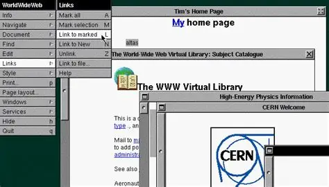

Evolution of Web Browsers
The evolution of web browsers has been a fascinating journey since the inception of the World Wide Web in the 1990s. From the early days of simple text-based browsers to the modern, feature-rich applications we use today, web browsers have undergone significant changes and improvements.
Important Moments
1990s
1990: Tim Berners Lee created the first known web browser while working at CERN, a physics lab in Geneva. This browser was known as the WorldWideWeb
1993: Marc andreeson created Mosaic web browser at the National Center for Supercomputing. He later expanded on this with the Netscape Navigator.
1996: Microsoft began bundling Internet Explorer with windows operating system making it the default browser for large majority of people.
1997: Mosaic was discontinued due to rise of Netscape.
2000s
2003: Apple releases Safari for iOS devices
2004: New modern browsers like Firefox emerged built on Netscape's open source code.
2007: Mobile Browsing emerges as Apple launches first iPhone with Safari Mobile
2008: Google Chrome launches
2015: Microsoft Edge replaces Internet Explorer
2023: AI assisted web browsing becoming a staple of modern browsing habits.